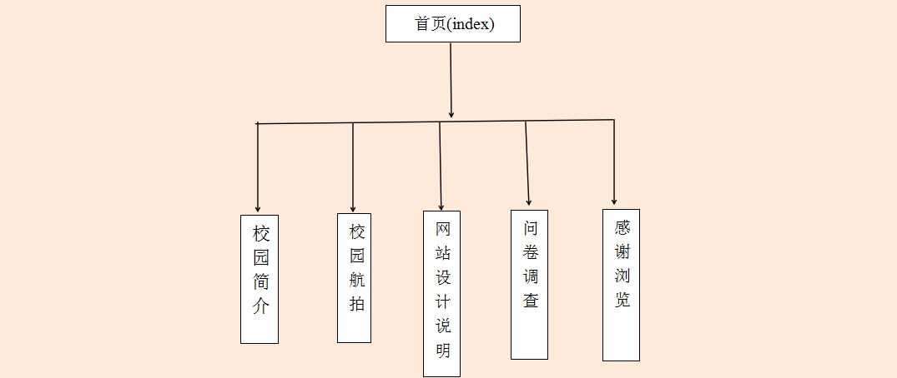

回首页
- 网站设计思想
- 再设计制作网站的时候，考虑到自己对校园网站相对来说更加熟悉，并且有网站模板和现成的超链接可以使用，所以就选择了做一个简易的校园网站。
- 所用技术
- 表格；图片；站内链接；站外链接；视频；内部样式与外部样式;网站使用了加背景图片在内的6张图片
- 网站模块构成(附结构树图)
- 网站由：首页（index.html）；学校简介（xxjj.html）;校园航拍（xyhp.html）;网站设计说明(wzsjsm.html)；问卷调查（wjdc.html）;感谢浏览（gxll.html）这6个页面构成
